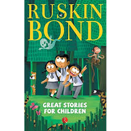

Great stories for
children-Ruskin Bond

Rs.50
Great Stories for Children is a collection of
some of Ruskin Bond's most
delightful children's stories.
The Cat in the Hat-Dr.Seuss

Rs.70
The Cat in the Hat is a children's book
written and illustrated by Theodor Geisel
under the pen name Dr. Seuss and first
published in 1957.
Charlotte's Web-E.B White

Rs.100
Charlotte's Web is a children's novel by American author
E. B. White and illustrated by Garth Williams; it was
published on October 15, 1952,by Harper & Brothers.